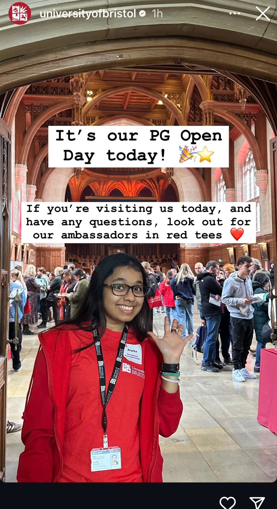
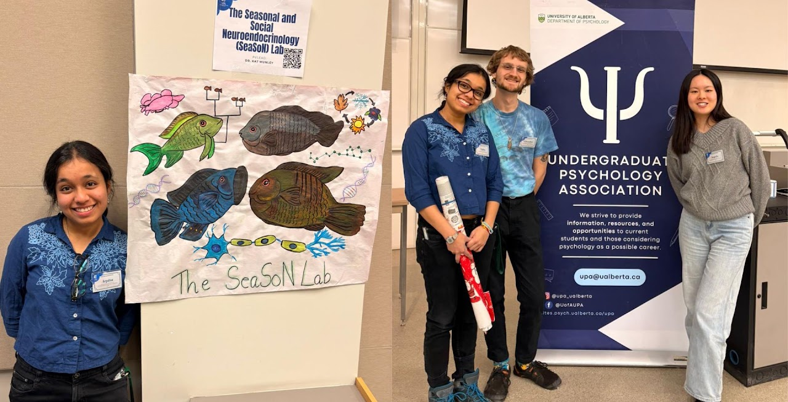

Teaching Fellow, Ashoka University
What’s it really like to be a Teaching Fellow at the Horizons Achievers Programme?
From morning coffee rituals to classroom magic, we handed the camera to Arpita Ghosh—Teaching Fellow for The Neuroscience of Well-Being—for an authentic, behind-the-scenes glimpse. Step into a day in her life and experience the pulse of Horizons.

Postgraduate Student Ambassador, University of Bristol
- Represented the University of Bristol at postgraduate recruitment and outreach events, answering prospective students' questions about programmes, applications, and student life.
- Supported widening participation by sharing lived academic experience and signposting applicants to relevant university services and resources, including funding, wellbeing, and accommodation.

SeaSoN Lab Representative
Undergraduate Psychology Association Lab Mixer, University of Alberta
- Delivered an invited talk to undergraduate psychology students on research pathways and lab culture, highlighting current work and how students can get involved in research.
- Led an interactive Q&A on building research experience: finding supervisors, volunteering, honours/thesis preparation, and practical tips for getting started in labs.